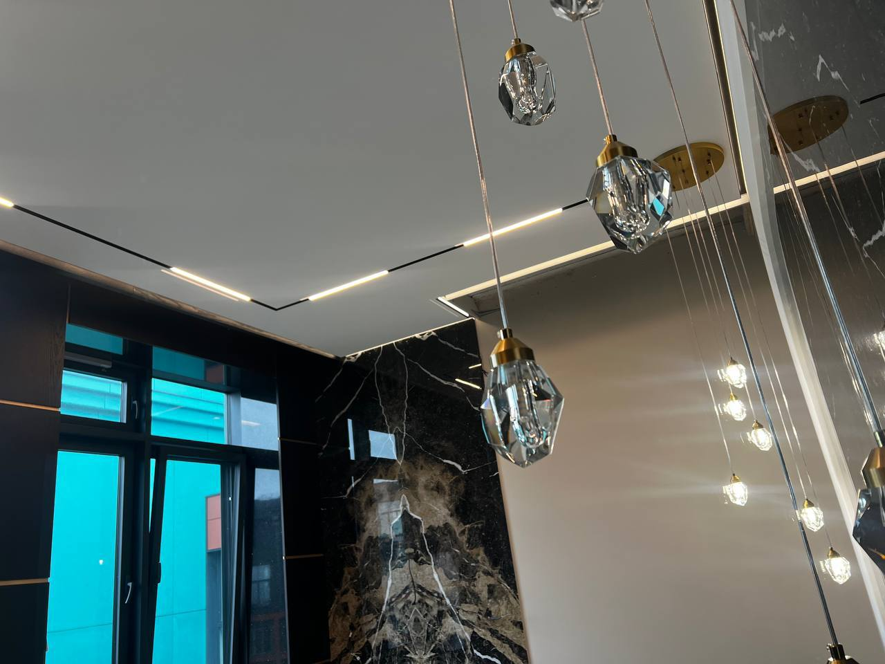
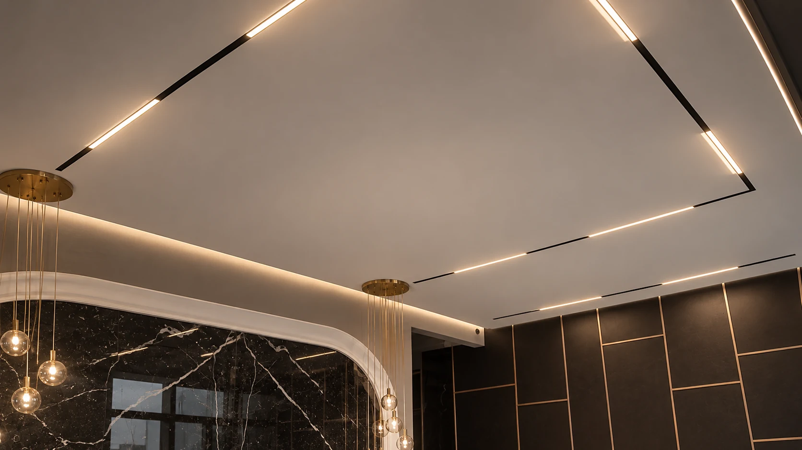
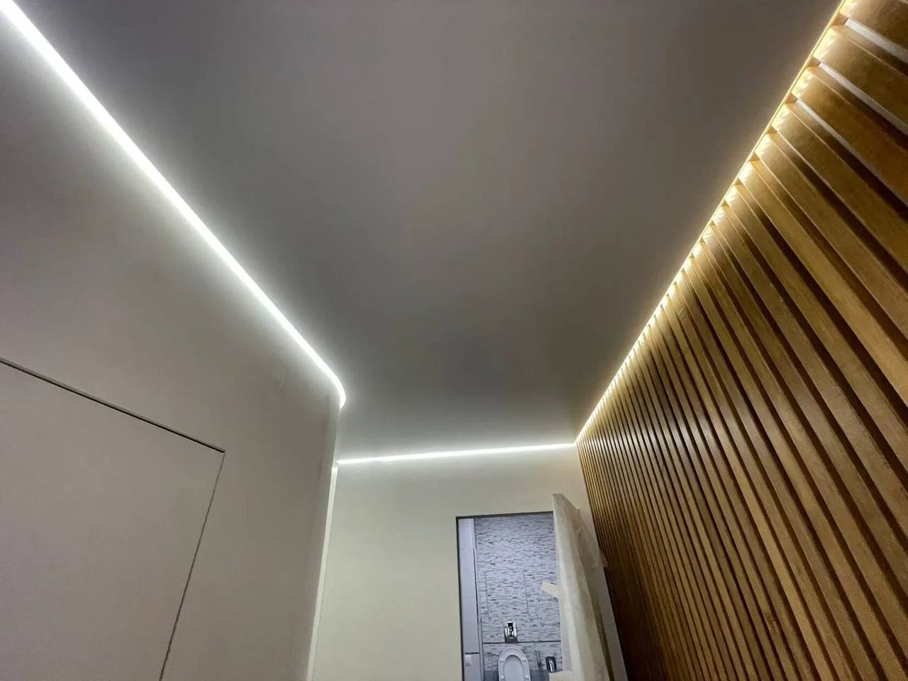
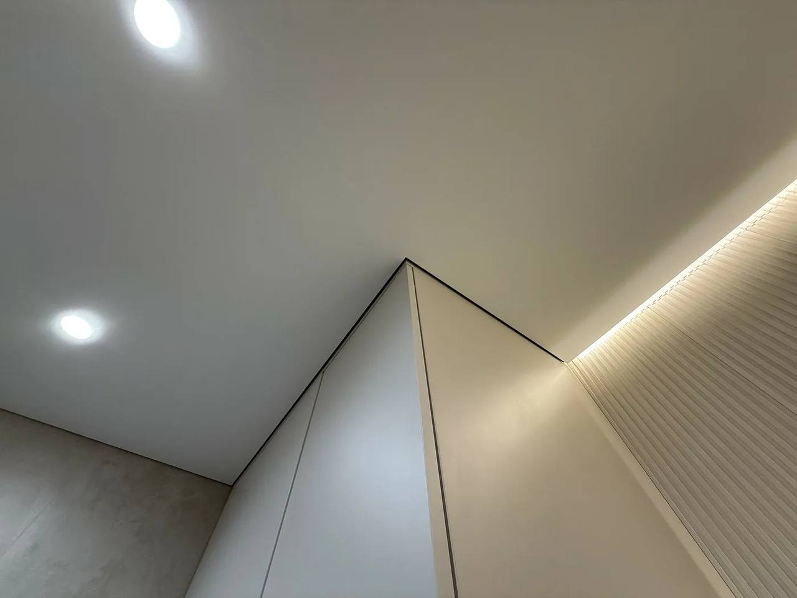
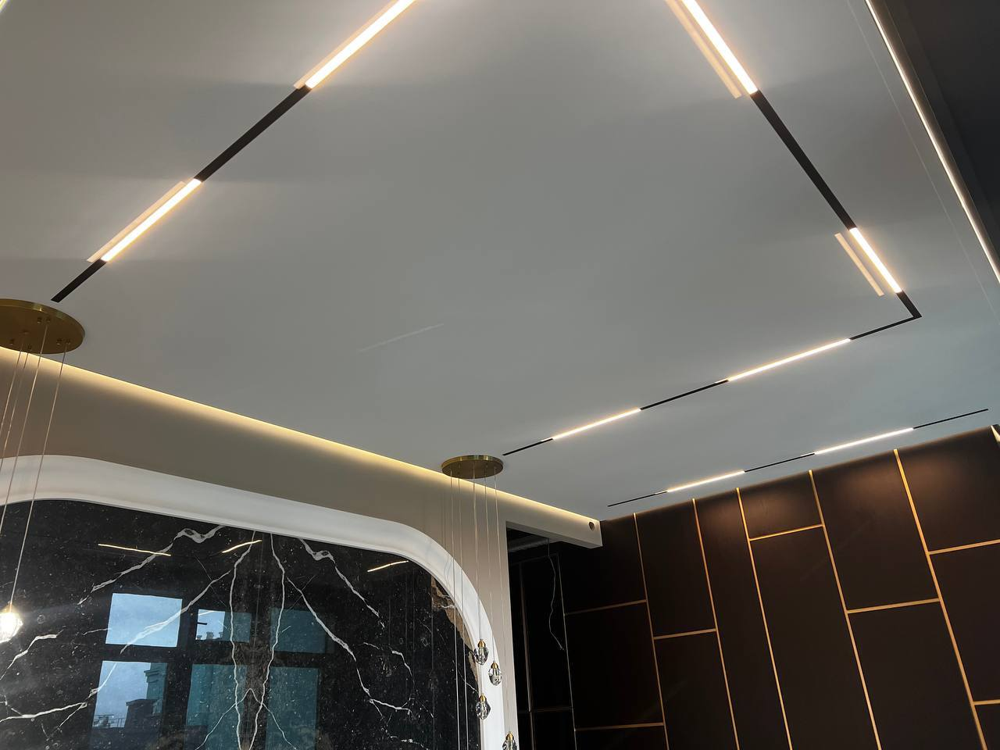
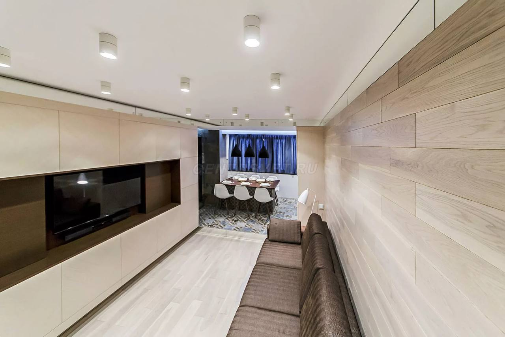

Пентхаус на Румянцева, 11
Натяжные и тканевые потолки, дизайнерский свет, подвесные люстры и электрокарнизы. Инженерные элементы встроены в интерьер с точной подгонкой узлов.
Обсудить похожий проект
НАТЯЖНЫЕ ПОТОЛКИ · КАЛИНИНГРАД И ОБЛАСТЬ
Подберём систему под интерьер и спланируем освещение. Стоимость рассчитаем после замера, сроки согласуем до монтажа. Замер в Калининграде бесплатный.
УСЛОВИЯ ПРОЕКТА
Вы заранее знаете состав работ, стоимость и график.

ПОДХОД VLICO
Сначала разбираемся в помещении и сценариях освещения. Затем согласуем профили, светильники, треки и карнизы, чтобы все элементы точно встретились при монтаже.
Потолок, освещение, карнизы и оборудование собираются в одну согласованную систему.
ВЫБРАННЫЕ РАБОТЫ
Частные интерьеры и коммерческие объекты. В каждом проекте потолок согласован с освещением и деталями помещения.
Обсудить похожий проект
Натяжные и тканевые потолки, дизайнерский свет, подвесные люстры и электрокарнизы. Инженерные элементы встроены в интерьер с точной подгонкой узлов.
Обсудить похожий проект


КОММЕРЧЕСКИЙ ОБЪЕКТ · ЗЕЛЕНОГРАДСК
Потолочные решения для гостиницы, где важны точность монтажа и организация работ на каждом этаже.
ПОТОЛОЧНЫЕ СИСТЕМЫ
Подбираем систему под задачу комнаты и заранее учитываем свет, карнизы и оборудование.
КАК МЫ РАБОТАЕМ
Обсуждаем помещение, подбираем комплектацию, согласуем смету и сроки. К монтажу приступаем, когда все детали понятны.
Обсудить задачуУточняем размеры, пожелания к свету и особенности помещения. Замер в Калининграде бесплатный.
Подбираем систему, составляем смету и фиксируем график работ до начала монтажа.
Устанавливаем потолок, интегрируем освещение и проверяем согласованные решения.
СВЯЗАТЬСЯ
Расскажите, что за помещение и каким вы хотите видеть свет. Подскажем, с чего начать расчёт.